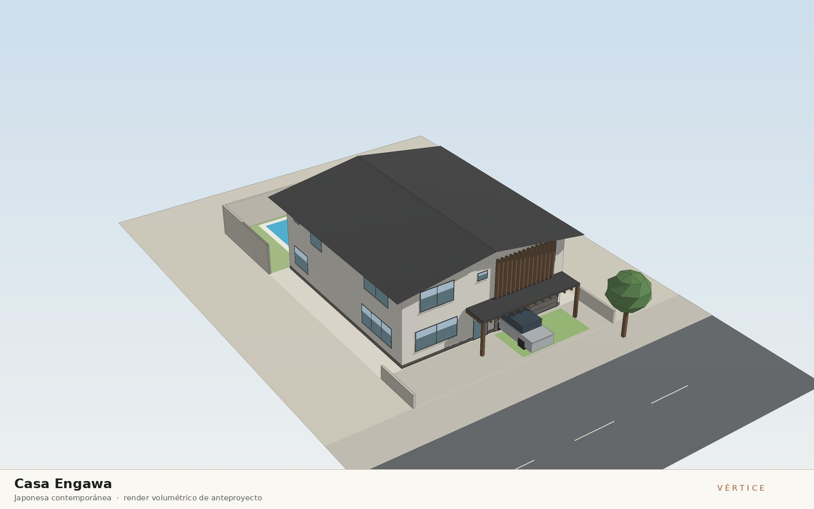
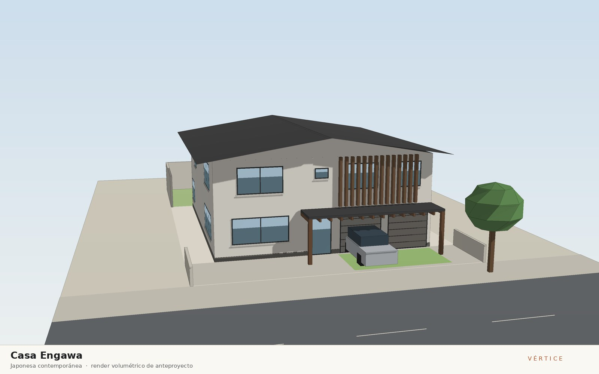
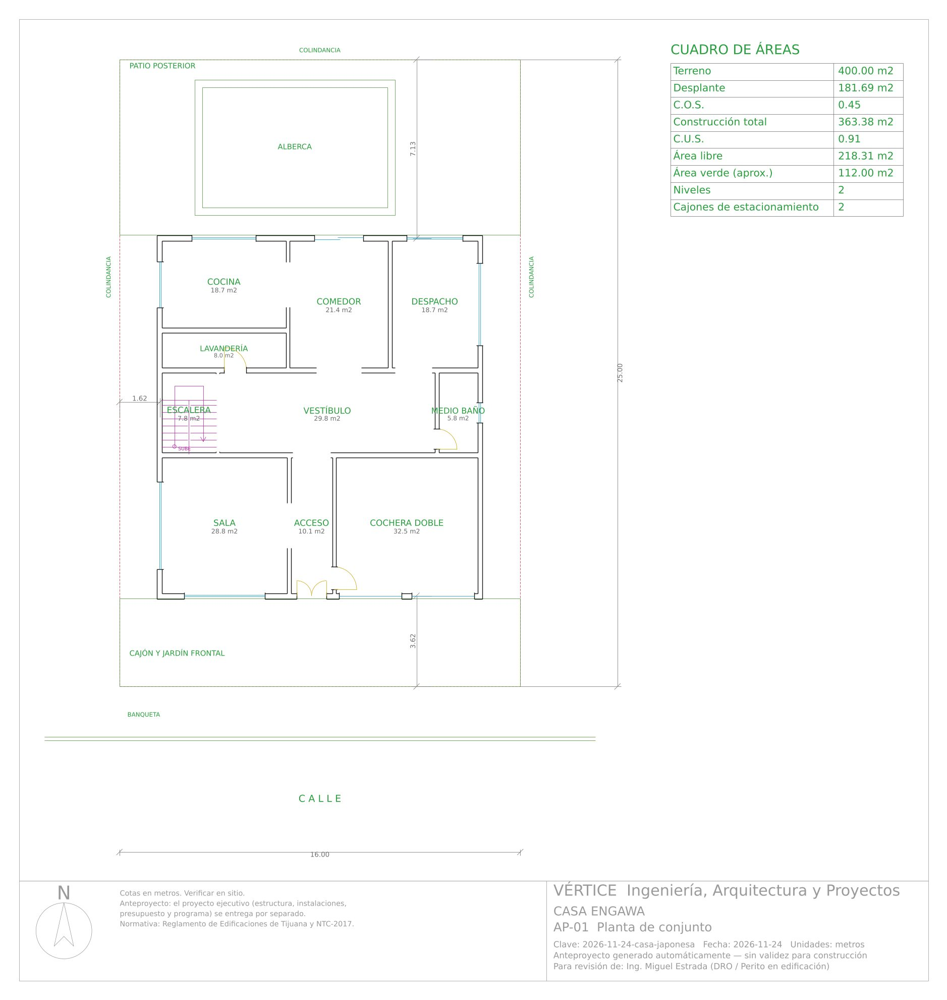
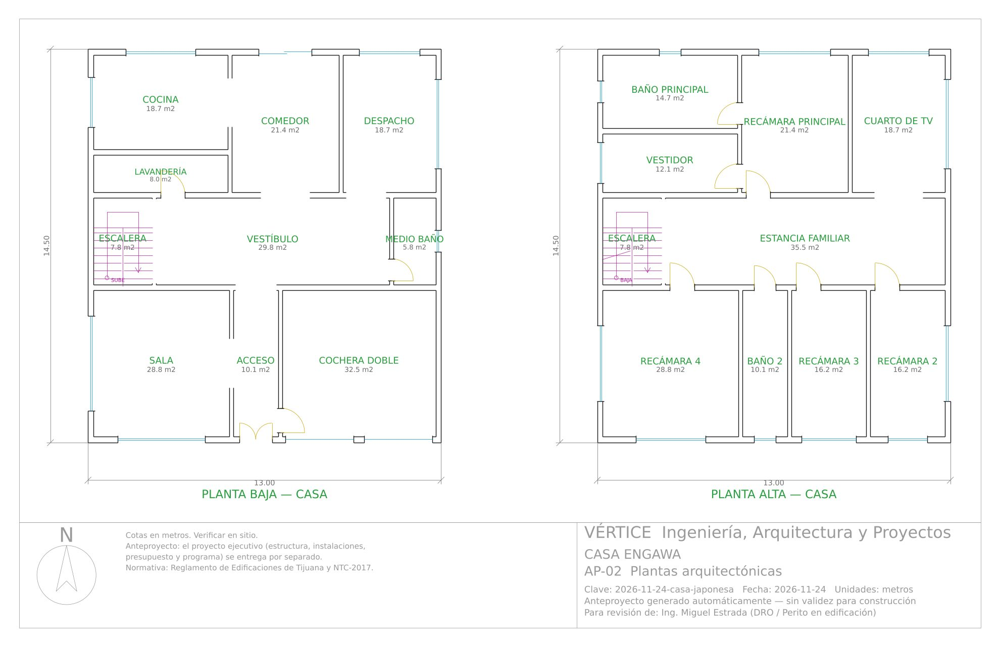
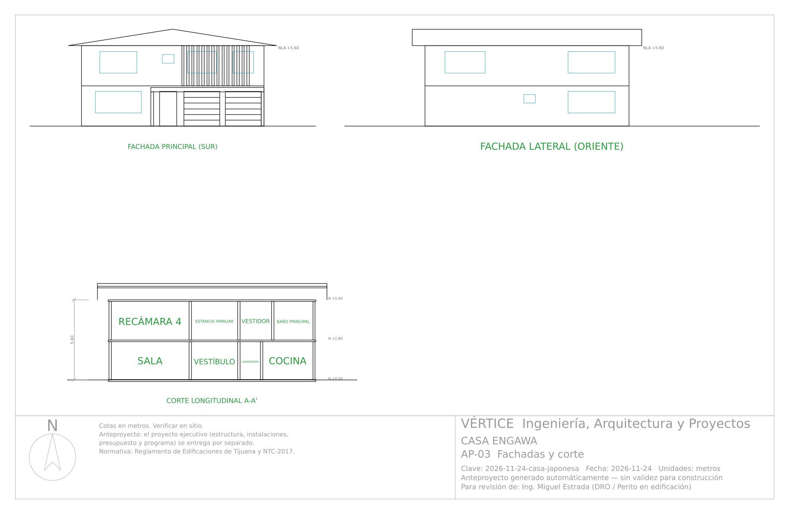

24 de noviembre de 2026 · Casa habitación
Casa Engawa
Corriente: Japonesa contemporánea

Concepto
Vivienda de dos niveles en un lote de 16 x 25 m en Tijuana que lleva la serenidad de la casa japonesa contemporánea al clima mediterráneo del Pacífico: un volumen claro y sereno bajo una cubierta a dos aguas de baja pendiente con aleros amplios que sombrean los muros y protegen los vanos de la lluvia de invierno. Hacia la calle, la sala queda a nivel de jardín frontal y en planta alta unos parteluces verticales de madera termotratada filtran el sol del sur frente a las recámaras 2 y 3 y guardan su intimidad sin cerrar la ventilación; el acceso y la cochera se recogen bajo un porche de madera tipo engawa, un umbral en sombra entre la calle y la casa. Comedor y cocina se abren al jardín y la alberca del norte, por donde entra la brisa marina que cruza la casa a través del vestíbulo hasta la calle, y los pasos laterales de 1.62 m permiten ventilar e iluminar cocina, despacho y recámaras por las fachadas oriente y poniente.
Dictamen del arquitecto
- Terreno de 16.00 x 25.00 m (400 m²); casa de 12.75 x 14.25 m a ejes en 2 niveles, 363.4 m² construidos con desplante de 181.7 m²: COS 0.45 y CUS 0.91, 218.3 m² libres (≈ 112 m² de área verde) con 3.62 m de cajón y jardín al frente, 7.13 m de patio posterior con alberca y pasos laterales de 1.62 m; uso habitacional unifamiliar por verificar con el PDU de Tijuana. Partido 'sala_frente' en espejo (cochera doble al oriente), distinto de los dos últimos proyectos de 16 x 25 m.
- Japonesa contemporánea con tres rasgos que trabajan juntos: cubierta a dos aguas de teja de barro (pendiente 18 %) con alero amplio de 0.90 m, parteluces verticales de madera termotratada en planta alta frente a las recámaras 2 y 3 (sol del sur, sin tapar ventanas ni impedir su ventilación) y porche tipo engawa con postes y viga de madera que cubre el acceso y la cochera. Proporción de vano 0.50; se evitó repetir 'marco' y 'celosía' del proyecto de ayer.
- Recorrido: acceso (10.1 m²) con puerta doble de 1.20 m y vano a la sala (28.8 m²), puerta a la cochera doble (32.5 m²) → vestíbulo (29.8 m²) con escalera de 1.15 m (peralte 17.5 cm, huella 29.0 cm, 2p + h = 64 cm), medio baño (5.8 m², con ventana) y lavandería (8.0 m², interior: extracción mecánica y ducto de secadora al exterior) → comedor (21.4 m²) abierto a la cocina (18.7 m²) y al patio por cancel corredizo, y despacho (18.7 m²) con ventanas al norte y oriente.
- Planta alta: estancia familiar (35.5 m²) que reparte a recámara 4 (28.8 m²), baño 2 (10.1 m²), recámaras 2 y 3 (16.2 m² c/u) al sur, cuarto de TV (18.7 m²) al norte y recámara principal (21.4 m²) con baño (14.7 m²) y vestidor (12.1 m²) que se entran sólo desde ella. Todas las recámaras ≥ 2.70 m de lado con ventana al exterior; altura libre 2.66 m en ambos niveles (≥ 2.30 m).
- Cédula de acabados completa: porcelanato 60x60 tono madera clara en locales secos, huellas de porcelanato con nariz antiderrapante en escalera, antiderrapante 60x60 en baños y concreto escobillado en cochera; 330.9 m² de piso iguales en planos y presupuesto. Motor corregido: el rótulo 'PORCHE DE MADERA' de la fachada A-05 se encimaba con el poste entre los portones cuando el porche cubre la cochera doble; ahora va dentro del peralte de la viga.
Dictamen de ingeniería
- Veredicto: construible conforme a norma — 0 errores y 0 avisos en las 28 verificaciones de coordinación. El ciclo arquitectura–estructura limitó los vanos abiertos entre locales a 1.80 m y pasó a block de 20 cm los muros en X (Y de 15 cm); 2 muros de planta alta sin apoyo continuo se especifican como divisorios ligeros de tablaroca; castillos sin interferir con vanos.
- Mampostería confinada (Q = 1.5): castillos K-1 15x20 (58 en planta baja y 62 en planta alta), dalas de desplante, cerramiento y remate; trabe de carga T-1 30x55 de 5.60 m con 5 #6 sobre la cochera doble apoyada en la columna C-1 15x30 (11.2 t) entre portones, y 16 trabes y cerramientos T-2 a T-17 de 15x30 a 20x35. Método simplificado NTC: X VR 89.6 t ≥ Vu 78.0 t; Y VR 86.3 t ≥ 78.0 t (dirección crítica, holgura de 10.7 %). V basal 70.9 t con c = 0.213 supuesto y T = 0.18 s.
- Losas macizas de 14 cm en entrepiso (≥ 13.8 cm) y azotea (≥ 13.3 cm), #3 @ 15 cm en ambos sentidos con bastones sobre apoyos; cubierta de teja sobre armadura de PTR con 100 kg/m² incluidos en la carga muerta. Zapatas corridas B = 50 cm, h = 20 cm, #4 @ 33: ZC-1 perimetral (q = 4.67 t/m²) y ZC-2 interior (q = 9.48 t/m², 79 % de la capacidad) contra una q adm supuesta de 12 t/m² a -0.80 m: requiere estudio de mecánica de suelos y confirmar el espectro sísmico del sitio. Cuantificación: 8,207 kg de acero y 87.3 m³ de concreto.
- Instalaciones: 6 ocupantes (0.9 m³/día), 22 UM en 11 muebles (1.21 L/s), toma Ø13 mm, cisterna de 2 m³ con hidroneumático de 1/2 HP y calentador de paso a gas; 25 UD, bajadas del baño 2 (al acceso) y del baño principal (a la cocina) junto a muro, colector Ø100 mm PVC al 2 % a la red CESPT; 234 m² de captación, 6.5 L/s a 2 bajadas Ø100 mm (≈ 9.0 L/s) separadas del sanitario; 18 circuitos (16,500 W instalados, 11,550 W de demanda, 58.3 A), interruptor general 2P-100 A, desbalance 0.6 %; gas LP con tanque estacionario de 500 L en patio (la cubierta inclinada no lo admite en azotea), ventilado y a más de 3 m de flamas, red de cobre tipo L con regulador de 2 etapas y llave de paso por aparato. Factibilidades de CESPT y CFE por tramitar.
- Presupuesto de $1,966,416 + IVA ($2,123,730 con IVA fronterizo; $5,412/m²) y programa de 23 semanas (136 días hábiles); cubierta de teja (237.3 m²), porche, 14 parteluces de madera, cancelería, portones, muebles y equipos quedan en la hoja "Por cotizar" (46 partidas). La alberca del patio posterior es indicativa del conjunto: no está en el presupuesto ni en las instalaciones y requiere proyecto propio (estructura, filtrado y recirculación).
Materiales
Muros de block de concreto con aplanado fino y pintura vinílica color arroz; parteluces verticales de madera termotratada 15x25 cm con acabado aceite natural sobre bastidor metálico anclado a las losas; porche tipo engawa con postes y viga de madera termotratada 20x20 cm; cubierta a dos aguas de teja de barro plana color grafito (pendiente 18 %) sobre armadura ligera de PTR galvanizado anclada a la losa de azotea, con aleros de 0.90 m y canalón perimetral; piso de porcelanato 60x60 tono madera clara en locales secos y escalera, antiderrapante 60x60 en baños; cancelería de aluminio negro mate con vidrio claro de 6 mm; puerta de acceso de madera sólida con tiras verticales
Vistas

Anteproyecto — descargas
Láminas del anteproyecto






Proyecto ejecutivo
Proyecto ejecutivo completo — 17 láminas. Se entrega por separado; no se publica en esta galería.
Revisión de coordinación arquitectura–estructura–instalaciones–acabados y normativa: Sin errores · 0 avisos en 28 verificaciones.
Arquitectónico
- A-01 Planta de conjunto
- A-02 Plantas arquitectónicas amuebladas
- A-03 Plantas acotadas a ejes
- A-04 Planta de azotea
- A-05 Fachadas
- A-06 Cortes arquitectónicos
- A-07 Cancelería y acabados
Estructural
- E-01 Planta de cimentación
- E-02 Losas, trabes y castillos
- E-03 Detalles estructurales
- E-04 Cuantificación de acero y concreto
Instalaciones
- IH-01 Instalación hidráulica
- IS-01 Instalación sanitaria y pluvial
- IE-01 Instalación eléctrica
- IG-01 Instalación de gas LP
- IH-02 Isométrico hidráulico
- IE-02 Cuadro de cargas y diagrama unifilar
Incluye: Memoria técnica (Word/PDF) · Presupuesto (Excel) · Programa de obra (Excel y Gantt) · Juego de planos (PDF y DXF)
Revisión de calidad
Sin errores · 0 avisos
Cuadro de áreas
Ver los 20 espacios
| Bloque | Nivel | Espacio | Medidas (m) | Área (m²) |
|---|---|---|---|---|
| Casa | Planta baja | Cochera doble | 5.80 x 5.60 | 32.48 |
| Casa | Planta baja | Acceso | 1.80 x 5.60 | 10.08 |
| Casa | Planta baja | Sala | 5.15 x 5.60 | 28.84 |
| Casa | Planta baja | Medio baño | 1.70 x 3.40 | 5.78 |
| Casa | Planta baja | Vestíbulo | 8.75 x 3.40 | 29.75 |
| Casa | Planta baja | Escalera | 2.30 x 3.40 | 7.82 |
| Casa | Planta baja | Despacho | 3.57 x 5.25 | 18.74 |
| Casa | Planta baja | Comedor | 4.08 x 5.25 | 21.42 |
| Casa | Planta baja | Lavandería | 5.10 x 1.57 | 8.03 |
| Casa | Planta baja | Cocina | 5.10 x 3.67 | 18.74 |
| Casa | Planta alta | Recámara 2 | 2.90 x 5.60 | 16.24 |
| Casa | Planta alta | Recámara 3 | 2.90 x 5.60 | 16.24 |
| Casa | Planta alta | Baño 2 | 1.80 x 5.60 | 10.08 |
| Casa | Planta alta | Recámara 4 | 5.15 x 5.60 | 28.84 |
| Casa | Planta alta | Estancia familiar | 10.45 x 3.40 | 35.53 |
| Casa | Planta alta | Escalera | 2.30 x 3.40 | 7.82 |
| Casa | Planta alta | Cuarto de TV | 3.57 x 5.25 | 18.74 |
| Casa | Planta alta | Recámara principal | 4.08 x 5.25 | 21.42 |
| Casa | Planta alta | Vestidor | 5.10 x 2.36 | 12.05 |
| Casa | Planta alta | Baño principal | 5.10 x 2.89 | 14.73 |
Anteproyecto conceptual generado por el motor Vértice. El predimensionamiento estructural y los cálculos de instalaciones son preliminares y no sustituyen la memoria de cálculo definitiva, el estudio de mecánica de suelos ni la revisión y firma del DRO y corresponsables.